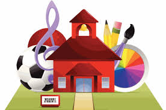

Extra Curriculum

Got selected for a hackathon hosted by IIT-Madras with IBM and RTBI during November 2015
Secured first prize in an event Webmania of Cyberia-15 during March 2015.
Secured third prize at a fourfold personality competition called UTKRISHT-2012.
Got third prize in Shodha-2009 in a Mathematics Exhibition at BVBCET (current KLETU, Hubli) as we had worked on End of the world problem.
Felicitated as Pride of Pavan the award given to the best student of my school in 2012.
Got prizes in several talent search exams, essay competitions, seminars.